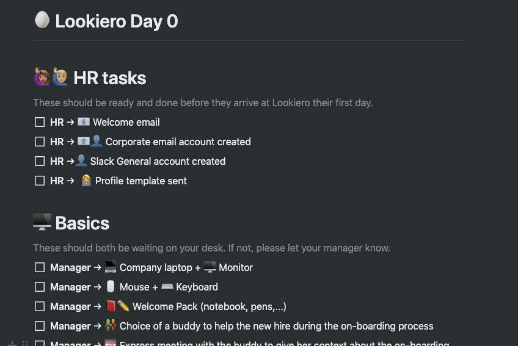
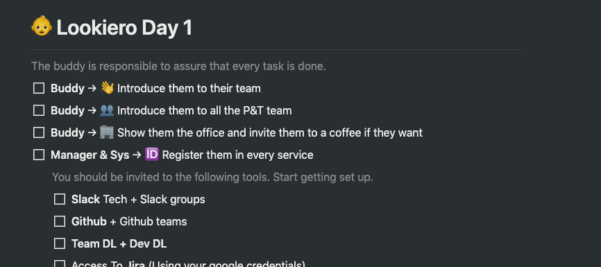

Onboarding
Cómo hacer que tus empleados se sientan bienvenidos

Da la bienvenida a tus nuevos empleados 👋
¿Qué entendemos por onboarding?
Creo que la respuesta puede variar mucho dependiendo de a quién le hagamos la pregunta. El tipo de empresa, el tamaño y madurez de ésta, los recursos… pueden hacer que lo que entendemos por onboarding pueda ser interpretado de formas muy diversas.
Yo personalmente creo que el onboarding es una oportunidad para crear un impacto positivo en la persona que se incorpora en la empresa.
Un cambio de trabajo supone un mix de sentimientos, desde nuevos deseos, ambiciones y expectativas, hasta miedos y ansiedades por la incertidumbre que supone la nueva posición. El onboarding sería el proceso por el cual podemos maximizar los sentimientos positivos frente a los negativos. Todos sabéis eso de que, La primera impresión es la que queda.
Según un estudio realizado por TalentWise:
- 91% de los empleados permanece en la compañía al menos durante un año cuando recibe un proceso de onboarding eficiente.
- 69% de ellos permanece al menos 3 años cuando la empresa tiene un proceso de onboarding bien estructurado.
No os descubro nada nuevo si os digo que los procesos de contratación consumen tiempo y dinero.
Es común ver a la mayoría de las empresas poner mucho empeño en el proceso de hiring pero descuidar la retención del talento que atraen.
Personalmente considero el proceso de onboarding como el primer paso para la mejora de la retención.
Durante mi vida profesional he pasado por varias empresas y en la mayoría de los casos, el proceso de onboarding se ha caracterizado por ser un NO onboarding.
En la actualidad trabajo en una start-up (Lookiero.com) con mucho espíritu crítico, donde se le da mucha importancia a la mejora continua. Como parte de esa mejora continua hemos creado una iniciativa cross departamental donde vamos redefiniendo y depurando el proceso de onboarding, es un proceso vivo que vamos adaptando a la realidad de la empresa en cada momento. Tengo la suerte de trabajar en una empresa en la que se le da mucha importancia a la Cultura, donde consideramos el onboarding parte de esa cultura y se convierte en algo que nos define. Uno de los pasos más importantes para nosotros durante el proceso de selección es la entrevista que denominamos culture fit. Es durante ésta entrevista donde contamos a los candidatos qué tiene de especial nuestra cultura de empresa y donde vemos cómo es el encaje del candidat@ en dicha cultura.
Proceso de onboarding en Lookiero y por qué le damos tanta importancia
Empezando por lo primero, las personas. El proceso de onboarding intenta que la nuevas incorporaciones se sientan bienvenidas incluso desde antes de formar parte de la compañía, luego os contaré cómo estructuramos el proceso.
Qué objetivos perseguimos principalmente:
- Reducir la ansiedad que supone un cambio de trabajo.
- Ayudar a la integración de la persona desde el primer momento.
- Establecer las expectativas desde el principio para evitar confusiones.
- Mejorar el compromiso y la motivación.
- Que se sienta acompañada, sobre todo los primeros días.
El onboarding es una oportunidad única para crear un impacto positivo en las nuevas incorporaciones.
Por otro lado entendemos que un onboarding bien estructurado tiene muchos beneficios para la empresa:
- Mejora de la retención a largo plazo.
- Incremento de los ratios de productividad de las nuevas incorporaciones.
- Mayor claridad del rol en la empresa.
- Mejor conocimiento de la misión y cultura de la compañía.
Antes de pasar a contaros cómo es el onboarding en Lookiero, os dejo un listado de cosas que hemos tenido en cuenta a la hora de definir el proceso:
- El proceso de onboarding empieza una vez realizada la oferta a el candidato, en Lookiero lo denominamos day 0.
- Es importante que el proceso sea multi-departamento.
- Incluir la cultura, los valores y principios de la compañía.
- Incluye las expectativas de los primeros días.
- No te quedes en el primer día.
- El onboarding es un proceso vivo, que tiene que evolucionar con la empresa.
- Recoge feedback después de cada incorporación.
- Hazlo divertido.
Herramientas que utilizamos para gestionar el onboarding:
- Notion
- Google Docs
LOOKIERO ONBOARDING
El proceso de onboarding en Lookiero se divide en varias etapas:
🥚 Lookiero Day 0
Ésta etapa del proceso se extiende desde que el candidato acepta la oferta de trabajo hasta su primer día en Lookiero.
En este punto RRHH va preparando con el candidato todos los papeleos y formalidades, además de rellenar un “profile template”, con información y anécdotas del candidato que se enviará el día de la presentación. Está funcionando muy bien como una forma de romper el hielo del primer día.
El manager se asegura de que todo el material esté listo: ordenador, pantalla, teclado, ratón, welcome pack, etc…

Es en esta fase en donde a mi forma de ver sucede uno de los puntos más importantes del onboarding, la elección de un buddy para acompañar y guiar a la nueva incorporación al equipo.
Os dejo un link sobre la importancia del buddy en el onboarding:
En esta parte del proceso el Buddy le envía al candidat@ un email de bienvenida, donde le adelantamos cómo será su onboarding, qué pasará durante su primer día, primera semana y primer mes. Además aprovechamos para intentar resolver alguna de las dudas más comunes:
- ¿Dónde está la oficina?
- ¿Cúal es la mejor forma de llegar a la oficina?
- ¿Por quién tengo que preguntar?
- ¿Tengo que llevar comida?, este primer día le avisamos al candidato que saldremos todo el equipo a comer juntos para ir conociéndonos.
- …
👶 Lookiero Day 1
Día clave del onboarding. Tenemos a la nueva incorporación con nosotros, es el momento de brillar y hacer sentir a esa persona bienvenida.
Durante el primer día y con la ayuda del buddy y del manager, conocerá al resto del equipo y las instalaciones.
Durante este día tendrá planificadas varias sesiones para que conozca más de cerca la cultura de la empresa. Su manager le presentará el plan estratégico y OKRs.
Tendrá una sesión con el equipo para conocer tanto el roadmap de negocio como el roadmap técnico. También se le presentará cuál es la arquitectura de las apps y cuál es el SDLC del equipo.
Tendrá su primer 121 con su manager, para conocer cómo será esta dinámica en el futuro, empezar a trabajar en la gestión de expectativas tanto en el corto como en el largo plazo, así como la definición de los goals.
Este día saldrá a comer con todo el equipo para ir conociéndolos en un entorno más distendido.
Por supuesto también tendrá tiempo y espacio para reposar toda la información, asegurarse que tiene acceso a todas las apps y el tooling de la compañía.
Os dejo un pantallazo de la página de notion.io, donde tanto mánager, buddy y la nueva incorporación tienen acceso para trackear todas las tareas.

🧒 Lookiero Week 1
Durante la primera semana se aprovechará para presentar todas las iniciativas cross-equipo que tenemos en marcha para ver a cuáles de ellas le interesa unirse para colaborar. La creación de esta versión inicial del onboarding es una de esas iniciativas, pero tenemos un montón de ellas en las que poder colaborar y ayudar.
Es durante la primera semana y con ayuda del buddy, donde empezará a familiarizarse con el SDLC del equipo, desarrollando una pequeña funcionalidad, desplegando en producción.
Al finalizar la primera semana el buddy planificará una sesión para poder recoger el feedback de los primeros días, comentar cómo está siendo el onboarding y ver si es necesario adaptar el propio onboarding basado en el feedback recogido. Así como sacar un rato para mostrar preocupación e interesarse por cómo está siendo la experiencia de su incorporación a la empresa.
👵👴 Lookiero Month 1
Con ayuda del buddy, de sus compañeros de equipo y de su manager, al final del primer mes esperamos que nuestr@ nuevo compañer@ esté totalmente integrado@ en las dinámicas del equipo.
Éste consideramos que es un buen momento para hacer otro checkpoint. De nuevo se reunirá con su buddy, para ver qué tal está yendo su onboarding. Del mismo modo se reunirá con su manager para revisar todo el proceso y de forma conjunta modificar o eliminar todo aquello no haya tenido sentido durante el proceso y añadir aquellas propuestas de mejora encaminadas a enriquecer el proceso de onboarding, que como ya resaltaba al inicio tiene que ser un proceso vivo que se vaya adaptando al contexto de la empresa en cada momento.
Listado de preguntas útiles
Primera Semana
- ¿Cómo está viviendo esta primera semana?
- ¿Qué cosas cambiaría del onboarding?
- ¿Qué cosas ha echado de menos?
- ¿Se siente arropad@ por el equipo?
- ¿Qué tal el equipo? ¿Qué te parece?
- ¿Coincide lo visto con tus expectativas?
Primer Mes
- ¿Crees que tienes todo lo necesario para sentirte productiv@ en la empresa ?
- ¿Dirías que el proceso de selección ha tenido algún impacto en tu adaptación a la empresa y al equipo?
- ¿Te ha ayudado el onboarding a sentirte con más o menos confianza para realizar tu trabajo?
- ¿Alguna cosa que creas que deberíamos incluir en el proceso?
- ¿Sí un amigo tuyo se animará a trabajar con nosotros, le dirías que los primeros días en la empresa no se tiene que preocupar de nada?
Detalles curiosos sobre el onboarding en grandes empresas
Netflix
Una de las cosas que más me han llamado la atención del proceso de onboarding de Netflix es que promueve que las nuevas incorporaciones se involucren en grandes proyectos desde el momento de su incorporación.
Otra curiosidad es que las nuevas incorporaciones no tienen el material listo a su llegada, son ellos mismos quién lo solicitan a través de la intranet de la compañía y al día siguiente lo tiene en su escritorio preparado.
Os dejo un link por si queréis conocer más sobre la cultura de Netflix:
“Yes to Desk”, desde que el candidato acepta la oferta, Twitter se pone a trabajar para que todo esté listo cuando la nueva incorporación llegue a su escritorio.
Con el objetivo de hacer el primer día más confortable para los nuevos empleados, el manager se unirá con ellos durante el desayuno e irán a comer con los que serán su compañeros.
Uno de los puntos más destacables del proceso de Twitter son los continuos checkpoints en el proceso para la mejora continua del mismo.
Zappos
Zappos paga a sus empleados por dejar la compañía si no les gusta el trabajo. Las nuevas incorporaciones realizan un curso de 5 semanas, al finalizar el curso si algún nuevo empleado cree que no es un buen “fit” para la empresa o no le gusta el trabajo, Zappos le paga 2000$ por dejar la empresa. Sí ,como lo oyes! 🤪
Una de las partes más destacadas del onboarding de Facebook es su Bootcamp de 6 semanas.
Lo nuevos empleados reciben una formación intensiva sobre la base de código de facebook, reciben sesiones sobre el funcionamiento interno y la cultura de Facebook. Al final del Bootcamp tienen flexibilidad para elegir proyecto dentro de la compañía.
Google HR, utiliza un proceso conocido como: “just in time” onboarding.
Este proceso consiste en enviar al manager un recordatorio el día antes de que incorpore el nuevo empleado con una simple lista de tareas:
- Tener una charla sobre el rol y la responsabilidades.
- Buscar un buddy.
- Ayudar al nuevo empleado a construir su red social.
- Planificar checkpoints cada mes durante los primeros seis meses.
- Incentivar un diálogo abierto.
Os dejo un enlace por si queréis profundizar más en el proceso:
Bibliografía:
- Onboarding - Management from Scratch Blog
- The 3 best onboarding tips from elite tech companies
- Twitter’s employee onboarding process
- Five Onboarding Best Practices New Hires Will Thank You For
Nota: Agradecer a Eloy, Gorka e Imanol su ayuda con la revisón del post.